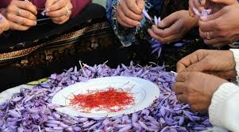

À propos de L'Or Rouge de Taliouine
Ce site a été conçu pour vous plonger au cœur de la région de Taliouine, berceau de l'une des épices les plus précieuses au monde : le safran.
Le safran de Taliouine est reconnu pour sa qualité exceptionnelle, grâce à un savoir-faire ancestral transmis de génération en génération. Sa production repose sur des étapes clés :
La culture
Le safran est cultivé dans des sols bien drainés et sous un climat spécifique. Les bulbes de crocus sativus, la plante qui produit le safran, sont plantés à la main pendant l'été, dans des champs soigneusement entretenus.
La récolte
La récolte du safran est une étape délicate, qui a lieu au petit matin, entre octobre et novembre. Les fleurs violettes du crocus sativus sont cueillies à la main avant l’ouverture complète des pétales, afin de préserver leur qualité.
L'émondage
L’émondage consiste à séparer les stigmates rouges (le safran) des autres parties de la fleur. Cette tâche, très minutieuse, est réalisée à la main, ce qui garantit une grande pureté du produit final.

Le séchage
Une fois les stigmates récoltés, ils sont rapidement séchés pour conserver leurs propriétés. Cette étape est essentielle, car elle influence directement la saveur, la couleur et les arômes du safran.
Le conditionnement
Le safran est ensuite trié et conditionné avec soin. À Taliouine, cette étape est souvent réalisée dans de petites coopératives locales, ce qui soutient les communautés rurales et leur économie.
Ce processus, entièrement artisanal, explique pourquoi le safran est si précieux et souvent surnommé "l'or rouge".